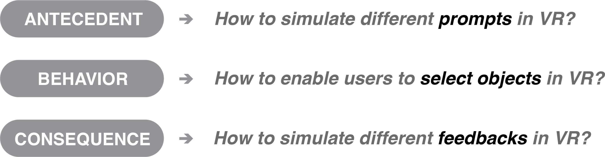
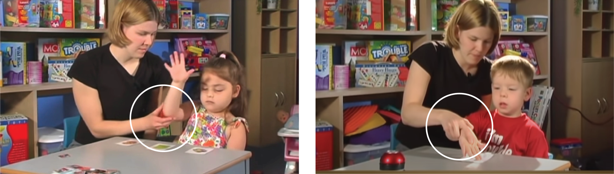

TRAILER
PROCESS
The process of the design and development for this VR application is quite different from projects in other platforms. There are some reasons resulting in the numerous iterations among Ideation & Design, Prototype & Implementation and Expert Review:
-
no tools can really prototype a VR experience, except Unity 3D
-
lack of related works as precedents
RESEARCH
I visited the Intensive Behavioral Intervention Services (IBIS) clinic at the University of Miami at the beginning of the project. By immersing myself in the context and closely observing the various trainings for children with ASD, I got a vivid impression of how the training was done in reality. Then I met with the director of IBIS clinic, Dr. Anibal Gutierrez, to learn some background knowledge about ASD and the research he proposed.


During the meeting, Dr. Gutierrez suggested me to simulate Discrete Trial Training (DTT). Discrete trial training (DTT) is a structured **Applied Behavior Analysis** (ABA) technique that was one of the first interventions developed for autism and had extensive research supporting it. A trial of DT training has three basic components: Antecedent, Behavior, and Consequence. Normally, Antecedent is the questions from instructors. Behavior is the response from students with ASD to the Antecedent. Consequence is the feedback of the behavior from instructors.
Essentially, in this kind of training, the users’ task is to choose the right model as the instructor providing the verbal name of that object. Normally, the instructor would ask questions like “which one is …“or “touch the …“.
The diagram beneath shows the basic structure of this type of training.

INTERACTION DESIGN
Prompts are the “cues” from the instructors that help students with ASD find the right answer. It happens between Antecedent and Behavior. In the real training context, when students hesitate or don’t respond to the Antecedent (question), normally instructors would provide prompts like repeating the question or holding one hand of the student and putting it on the target object.
How to translate different "prompts" to VR experience?
1.1 Prompts in the live training
1.2 Prompts in the first iteration (storyboard)

1.3 Prompts in the final prototype


1.4 The distribution of prompts along the timeline

2. How to enable users to select objects in VR?
The most important interaction of this VR system is selecting the object in front of users. In the stage of Technical Research, I tried three approaches shown as beneath. And finally chose “using a virtual pointer with controller” due to two reasons:
-
using controller would enable more accurate tracking of users’ movements
-
using a virtual pointer would allow users to interact with full-size objects at a certain distance
2.1 Technical research of "selecting" behaviors in VR


2.2 Different "selecting" behaviors in the final prototype
In the scope of the detailed VR experience, selecting behaviors are separated by three types of interactive objects, allowing users to be more aware of the difference between these objects. To differentiate different selecting behaviors, I mainly used different auditory feedbacks for hovering and triggering (behaviors of virtual pointer) to do the separation.


DEMO: Select different objects